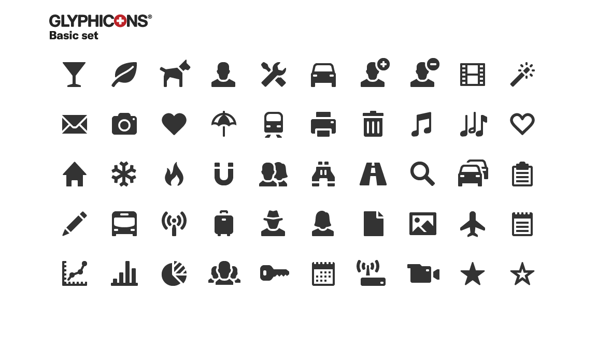
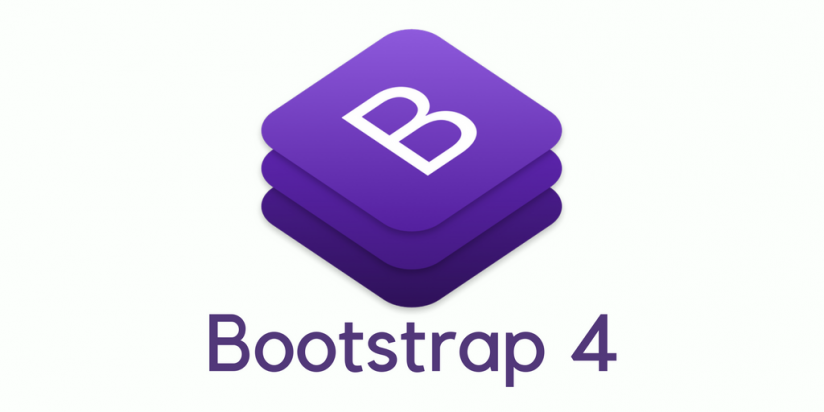

A continuación se listarán y describirán las diferentes versiones de Bootstrap
0 Twitter Blueprint
Antes de 2011
La primera versión de Bootstrap era simplemente un framework creado por varios empleados de twitter
para así fomentar la consistencia entre todas las herramientas internas
1 Bootstrap 1.0
19 de Agosto de 2011
Fue el resultado de renombrar Twitter Blueprint,
por lo que sus características son muy parecidas
2 Bootstrap 2.0
31 de enero de 2012
Esta nueva versión incorporó soporte propio para los Glyphicons,
un conjunto de pictogramas para facilitar la navegación,
así como nuevos componentes y cambios para los antiguos

3 Bootstrap 3.0
19 de Agosto de 2015
On August 19, 2013, Bootstrap 3, was released.
It redesigned components to use flat design and a mobile first approach.
Bootstrap 3 features new plugin system with namespaced events.
Bootstrap 3 dropped Internet Explorer 7 and Firefox 3.6 support,
but there is an optional polyfill for these browsers.
4 Bootstrap 4.0
29 de octubre de 2014
Otto announced Bootstrap 4 on October 29, 2014.
The first alpha version of Bootstrap 4 was released on August 19, 2015.
The first beta version was released on August 10, 2017.
Otto suspended work on Bootstrap 3 on September 6, 2016, to free up time to work on Bootstrap 4.
Bootstrap 4 was finalized on January 18, 2018.
Significant changes include:
Major rewrite of the code
Replacing Less with Sass
Addition of Reboot, a collection of element-specific CSS changes in a single file, based on Normalize
Dropping support for IE8, IE9, and iOS 6
CSS Flexible Box support
Adding navigation customization options
Adding responsive spacing and sizing utilities
Switching from the pixels unit in CSS to root ems
Increasing global font size from 14px to 16px for enhanced readability
Dropping the panel, thumbnail, pager, and well components
Dropping the Glyphicons icon font
Huge number of utility classes
Improved form styling, buttons, drop-down menus, media objects and image classes

5 Bootstrap 5.0
5 de Mayo de 2021
Bootstrap 5 was officially released on May 5, 2021
Los principales cambios son:
New offcanvas menu component
Removing dependence on jQuery in favor of vanilla JavaScript
Rewriting the grid to support responsive gutters and columns placed outside of rows
Migrating the documentation from Jekyll to Hugo
Dropping support for Internet Explorer
Moving testing infrastructure from QUnit to Jasmine